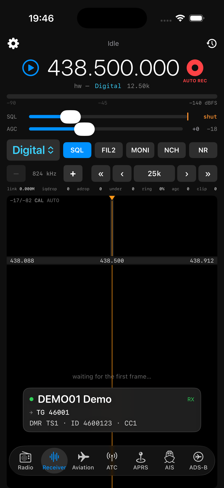
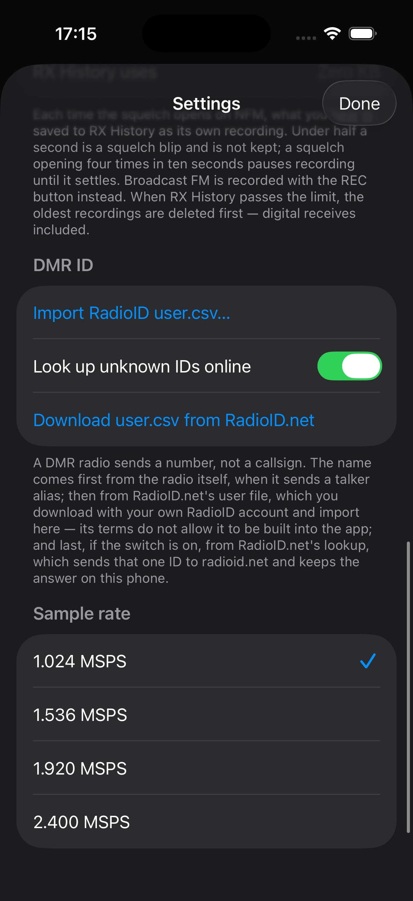
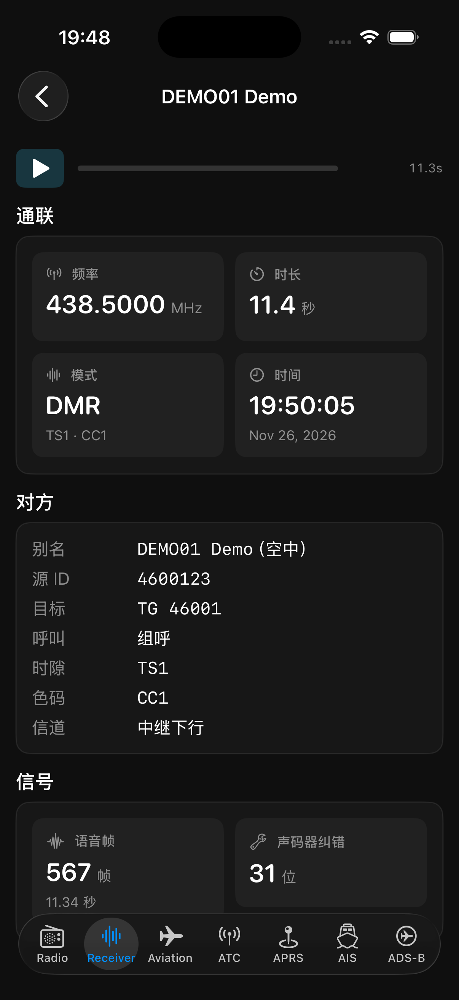

DMR 数字语音
DMR（数字移动无线电）是摩托罗拉、海能达等手台和不少业余中继用的数字制式，一个频道分成两个时隙，可以同时跑两路通话。SDRViewer 接收它的方式和 D-STAR、YSF 一样：同一个 Digital 方式、同一张卡片、同一个 RX History，不用另选。
怎么开始收
- 调到 DMR 的频率在 Receiver 页面输入频率，比如本地 DMR 中继的下行频率。
- 方式选 Digital 或 NFM两个都可以：来了 DMR 信号，按钮自动变成 Digital 并播放数字语音；信号结束变回 NFM。
- 点播放，等人发射有人发射时，页面下方弹出卡片，扬声器里播放解码后的语音。
频率要准。和其它数字制式一样，接收机频率偏了就解不出来。使用前先完成频率校准。
卡片上的内容

| 位置 | 含义 |
|---|---|
| 第一行 | 对方是谁：电台在空中发来的名字（Talker Alias），没有的话是查到的呼号，都没有就是 7 位 DMR ID。 |
| → TG 46001 | 呼叫的对象。TG 是组呼（talkgroup），ID 开头是单呼。 |
| DMR TS2 · ID 4600123 · CC1 | 时隙（TS1 或 TS2）、对方的 DMR ID、色码（CC，相当于中继的“门牌号”）。 |
| ENC | 对方加密了。卡片照常显示，记录照常保存，但不播放语音——加密的数据送进声码器只会是刺耳的杂音。 |
中继的两个时隙可以同时有人说话，这时扬声器跟着先开始的那一路，那一路结束后再换到另一路；两路都各自存成记录。
呼号是怎么来的
DMR 电台在空中发的是一个 7 位数字 ID，不是呼号。SDRViewer 按这个顺序找它对应的呼号：
- 电台自己发的名字（Talker Alias）。很多电台和 BrandMeister 中继会在通话里附带呼号和名字，这是对方自己说的，最准。
- 你导入的 RadioID 用户表。全球业余 DMR ID 都在 RadioID.net 登记。它的条款不允许把这张表内置进 App，所以需要你用自己的 RadioID 账号下载
user.csv，在设置里导入。导入后整张表在手机本地，查询不联网。 - 在线查询（默认打开）。上面两个都查不到时，向 RadioID.net 查这一个 ID，结果保存在手机里，下次不再查。这会把收到的 ID 发给 RadioID.net；不希望这样就在设置里关掉。

记录里保存的是 ID 本身，呼号是显示时才查的。所以以后导入了新的用户表，旧记录也会显示出呼号。
RX History 里的 DMR 记录

和 D-STAR、YSF 的记录在同一个列表里，左边的标签写着 DMR。详情页的“对方”一栏有：别名（空中）、呼号、姓名、所在地、源 ID、目标、组呼还是单呼、时隙、色码，以及信道类型——中继下行（中继发出来的）、手台上行（手台发给中继的）或直通（手台对手台）。
常见情况
| 现象 | 原因和办法 |
|---|---|
| 瀑布图上有信号，但没有卡片也没有声音 | 频率偏了，先做频率校准；或者那不是 DMR 信号。 |
| 卡片上只有数字，没有呼号 | 对方没发别名，你也没导入 RadioID 表，在线查询又关着或没联网。 |
| 有卡片、写着 ENC，没有声音 | 对方加密了，无法解码。 |
| 只录到一部分，开头没有 | 你打开接收时对方已经在说话了。DMR 每 360 毫秒重复一次身份信息，中途加入也能认出是谁，只是缺了开头。 |